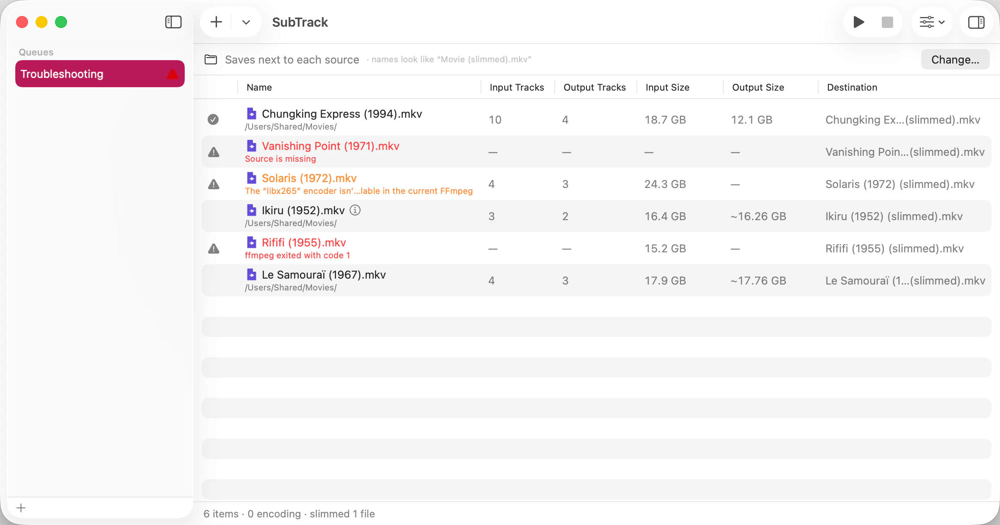

Bei den meisten Dateien läuft vom Hinzufügen bis zum Abschluss alles ohne dein Zutun. Wenn nicht, liegt es fast immer an einem von drei Gründen: Die Quelle konnte gar nicht gelesen werden, die Quelle liegt nicht mehr dort, wo sie war, oder ein Durchlauf hat begonnen und ist dann schiefgegangen.

Jede Zeile, die Aufmerksamkeit braucht, zeigt in der Statusspalte ein Warndreieck. Zeige auf das Dreieck, um den Grund zu lesen. Die Zeile unter dem Dateinamen sagt dasselbe, wird aber auf die Breite der Spalte gekürzt, und eine FFmpeg-Meldung ist oft länger. Wenn sie abgeschnitten ist, zeige darauf oder öffne das Aktivitätsprotokoll.
Ein Dreieck kann auch bedeuten, dass der verwendete FFmpeg-Build keinen Encoder für einen Codec hat, den du als Zielcodec zum Umcodieren gewählt hast. In diesem Fall wird der Codec genannt, und die Lösung steht unter Wenn sich ein Codec nicht codieren lässt.
Wähle Fenster ▸ Aktivitätsprotokoll (⇧⌘L).
Das Protokoll ist der Bericht darüber, was geschehen ist, mit den neuesten Einträgen zuerst, und es umfasst alle Warteschlangen auf einmal: die Uhrzeit, die Warteschlange, die Datei und was mit ihr passiert ist. Das Protokoll gibt es vor allem aus einem Grund – hier steht der vollständige, ungekürzte Fehlertext. In der Warteschlange ist pro Datei nur Platz für eine kurze Zeile; das Protokoll hat die ganze Meldung.

Es ist dafür gedacht, am Morgen nach einem Durchlauf gelesen zu werden, den du hast laufen lassen. Jeder Durchlauf schreibt eine Zeile, wenn er beginnt, und eine weitere, wenn er endet und zusammenfasst, was dabei herauskam; dazwischen steht alles, was schiefgegangen ist: eine Datei, die fehlgeschlagen ist, eine Quelle, die verschwunden ist, eine Umcodierung, die dieser FFmpeg-Build nicht ausführen kann, ein Problem, das sich später erledigt hat.
Eine Datei, bei der alles glatt läuft, steht gar nicht im Protokoll. Analysieren, Codieren und Abschließen schreiben nichts – die Schlusszeile enthält die Zahlen –, sodass ein fehlerfreier Durchlauf mit dreihundert Dateien zwei Zeilen statt sechshundert ergibt – und alles, was du dort siehst, lesenswert ist. Ein Durchlauf ohne Probleme zeigt Nichts zu melden.
Keine Meldung ist hier abgekürzt. Jeder Eintrag wächst so weit, wie er es braucht, und der Text lässt sich auswählen und kopieren. Nur die Zeitangaben sind verkürzt: Die von heute zeigen nur die Uhrzeit, ältere zusätzlich das Datum.
Das Protokoll gilt für die aktuelle Sitzung von SubTrack. Beim Beenden wird es geleert, denn es soll über die Sitzung Auskunft geben, in der codiert wurde.
Wenn die Meldung zu nichts auf dieser Seite passt, möchten wir davon erfahren – kopiere sie aus dem Protokoll und melde ein Problem auf GitHub.
Alles andere auf dieser Seite betrifft jeweils eine Datei. Dies hier betrifft keine davon: „Wird nicht gesichert“ rechts in der Statusleiste bedeutet, dass SubTrack die Warteschlange selbst nicht sichern kann. Was du auf dem Bildschirm siehst, stimmt; was auf der Festplatte steht, hält nicht mehr Schritt.
Der Hinweis erscheint nur, solange das der Fall ist, und verschwindet, sobald das Sichern wieder funktioniert – ein Laufwerk, das kurz beschäftigt war, hinterlässt also nichts. Klicke darauf, um das Aktivitätsprotokoll zu öffnen, wo der ganze Grund in einer eigenen Zeile steht – gekennzeichnet mit Alle Warteschlangen, weil er sich anders als das meiste dort nicht auf eine einzelne Datei bezieht. Das Protokoll hält auch fest, wann das Problem begonnen hat, und schreibt eine weitere Zeile, wenn das Sichern wieder klappt, sodass von einem Fehler, der in deiner Abwesenheit kam und ging, Beginn und Ende dokumentiert sind.
Es gibt keine Taste, die das behebt, und genau deshalb sagt SubTrack es dir, statt zu warten. Solange der Hinweis zu sehen ist, geht alles, was du hinzufügst oder änderst, beim Beenden möglicherweise verloren. Prüfe, ob die Festplatte mit deinem Benutzerordner voll ist, und notiere dir alles, was du lieber nicht ein zweites Mal einrichten möchtest.